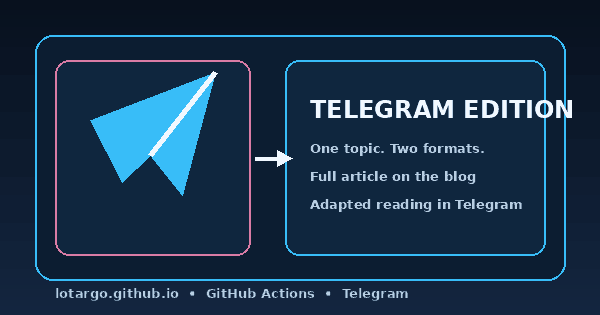

One Topic, Two Editions: Giving Telegram Its Own Article Format

When Telegram was first connected to the blog, the initial production version behaved like a notification system: the channel received a title, a short description, and a button leading to the website. The delivery path was reliable, but the reading experience exposed an awkward detail. The channel offered very little without leaving Telegram, while the linked discussion group automatically repeated the same announcement.
Why a simple announcement was not enough
A linked Telegram group is not an independent comment feed. Every channel post is automatically copied into the group and becomes the root of its discussion thread. A minimal announcement is therefore duplicated twice: first as a notification in the channel, then as the same service-like message in the group.
The useful fix is not to remove the group, but to change the role of the channel. A channel post should contain enough substance to be read on its own.
One topic, different editorial forms
An Article Bundle can now carry four editions:
- a complete Russian article for the website;
- a complete English article for the website;
- a compact Russian edition for Telegram;
- a prepared English Telegram edition for a future channel.
The Telegram text is not generated by cutting off the first paragraphs. It is a separate Markdown source where emphasis, explanations, and structure can be adapted for messenger reading.
What the Telegram edition supports
The publisher converts a safe Markdown subset into Telegram HTML:
- headings become bold lines;
- bold text, italics, and
inline codeare preserved; - lists receive readable markers;
- quotes become native Telegram blocks;
- the complete article remains available through a dedicated button.
When the article has a compatible PNG, JPEG, or WebP cover and the text fits the caption budget, the post is sent as one sendPhoto message. Longer editions use a text message with a link preview.
The key rule is that one channel post should remain one self-contained publication and one discussion thread.
Protection against oversized posts
CI measures the visible text after Markdown control characters are removed. The project limit is 900 characters for an image caption and 3600 characters for a text-based Telegram article.
An oversized edition is rejected before installation or delivery. GitHub Actions displays a direct error containing the language, actual length, selected limit, source path, and the minimum number of characters that must be removed.
What remains on the website
Telegram does not replace the blog. The website still provides the complete bilingual edition, responsive layout, large images, galleries, tables, code, and navigation between articles.
One source topic therefore gains two honest forms: a compact publication that works inside the channel and a complete editorial version in the blog.
Одна тема, две редакции: отдельный формат статьи для Telegram
Когда мы подключили Telegram к блогу, первая production-версия работала как система уведомлений: канал получал заголовок, короткое описание и кнопку на сайт. Технически цепочка была надёжной, но с точки зрения читателя возникла странность. Канал почти ничего не давал без перехода в блог, а связанная группа обсуждений автоматически повторяла тот же анонс.
Почему простой анонс оказался недостаточным
Связанная группа Telegram устроена не как независимая лента комментариев. Каждый пост канала автоматически появляется в группе и становится корнем обсуждения. Поэтому бессодержательный анонс дублируется дважды: сначала как уведомление в канале, затем как такое же служебное сообщение в группе.
Проблема решается не отключением группы, а изменением роли самого канала. Он должен содержать материал, который можно прочитать самостоятельно.
Одна тема, разные формы подачи
Теперь Article Bundle может содержать четыре редакции:
- полную русскую статью для сайта;
- полную английскую статью для сайта;
- компактную русскую редакцию для Telegram;
- подготовленную английскую Telegram-редакцию на будущее.
Telegram-текст не вырезается автоматически из первых абзацев. Это отдельный Markdown-файл, в котором можно иначе расставить акценты, сократить объяснения и сохранить только то, что хорошо читается внутри мессенджера.
Что поддерживает Telegram-редакция
Издатель преобразует безопасное подмножество Markdown в Telegram HTML:
- заголовки становятся жирными строками;
- сохраняются жирный текст, курсив и
inline code; - списки получают понятные маркеры;
- цитаты превращаются в нативные блоки Telegram;
- ссылка на полную статью остаётся отдельной кнопкой.
Если у статьи есть совместимая PNG-, JPEG- или WebP-обложка и текст укладывается в лимит подписи, публикация отправляется одним sendPhoto. Более длинная редакция использует текстовое сообщение и link preview.
Главный принцип: один пост канала должен оставаться одной самостоятельной публикацией и одной веткой комментариев.
Защита от слишком длинных публикаций
CI считает длину уже видимого текста после удаления служебной Markdown-разметки. Для подписи к изображению установлен проектный лимит 900 символов, а для текстовой Telegram-статьи — 3600 символов.
Если редакция длиннее, Article Bundle отклоняется до установки и отправки. В GitHub Actions появляется понятная ошибка с языком, фактической длиной, лимитом, путём к файлу и числом символов, которые нужно убрать.
Что остаётся в блоге
Telegram не заменяет сайт. Здесь по-прежнему доступны полная двуязычная версия, адаптивная вёрстка, большие изображения, галереи, таблицы, код и навигация между материалами.
В результате одна исходная тема получает две честные формы: компактную самостоятельную публикацию в канале и полную редакционную версию в блоге.